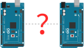
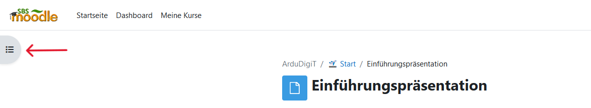
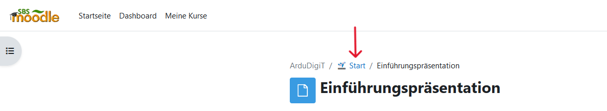
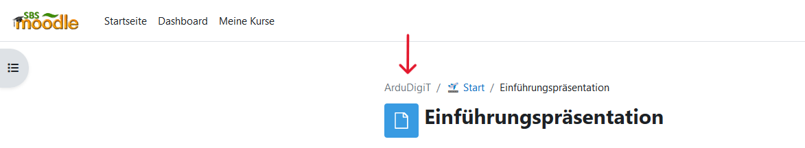

Eine Einführung in die digitale Datenübertragung

Solche oder ähnliche Bilder findet man als Symbolbilder in den Nachrichten, wenn es beispielsweise um Computer oder das Internet geht.
Aber was haben diese Lichter, Blitze und Nullen und Einsen zu bedeuten?
Um das herauszufinden, sollst du in diesem Kurs zwei Arduinos dazu bringen Text auszutauschen.
Dazu bietet dieser Kurs vier Module an, die aufeinander aufbauen und dich darauf vorbereiten diese Aufgabe zu meistern.
🔃 → 🛠️ → 🔌 → 🧑💻
Hier noch ein paar Hinweise: ...
In jedem Modul gibt es ein Glossar (), in dem alle wichtigen Begriffe dieses Moduls übersichtlich zusammengefasst sind. Diese können und sollen bei den Aufgaben gerne benutzt werden.
Außerdem werden alle Begriffe, die in den Glossaren stehen, im Kurs mit Links versehen. Wenn du auf diese klickst, erhältst du ein Pop-up, das diesen Begriff erklärt.
Um in Moodle das Inhaltsverzeichnis des Kurses zu öffnen, klicke oben links:
Über dem Namen der aktuellen Aktivität siehst du, wo du dich gerade befindest.
Mit einem Klick auf den Namen des Abschnittes kommst du zurück in den Abschnitt:
Mit einem Klick auf den Namen des Kurses kommst du in die Kursstartseite:
Und jetzt: Viel Spaß und Erfolg! 🍀
Gehe zurück auf die Kursstartseite, um mit dem ersten Modul zu beginnen.